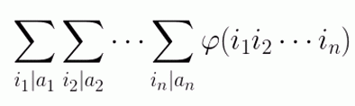

BZPRO
#3560. DZY Loves Math V
内存限制：256 MiB
时间限制：10 Sec
提交
提交记录
讨论
题目描述
给定
n
个正整数
a1,a2,
…
,an
，求

的值（答案模
10^9+7
）。
输入格式
第一行一个正整数n。
接下来n行，每行一个正整数，分别为a1,a2,…,an。
输出格式
仅一行答案。
样例
样例输入
3
6
10
15
样例输出
1595
数据范围与提示
1<=n<=10^5，1<=ai<=10^7。共3组数据。